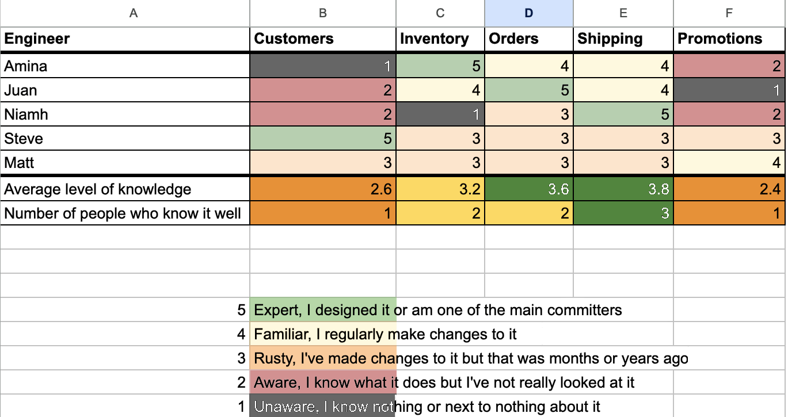

You can’t move fast if every service has to be handed over to someone else to run. That means services need to be owned in production by the team that wrote the code. You might, like the FT, have a first-line support team who are available 24/7 and can roll back a release, and restart, failover, or scale up services. For complicated issues though, people generally need a good understanding of the service, and a first-line team is just that: first line. They will need to pinpoint which team owns the service at fault and escalate to them.
This requires a mindset change, toward “You build it, you run it”, as Werner Vogels called it when describing Amazon’s move to a service-oriented architecture with teams having complete responsibility for their services.
Teams owning their own services in production brings benefits: you make different decisions about how to build a service when you are the person who might get called at 2 a.m. But it also means that lots of people who’ve never been responsible for production support now will be. And you’ll probably have some teams that are too small to run an out-of-hours rota.
Supporting your applications in production can be a steep learning curve for product teams that may have no operational experience. While the paved road can help, product teams still need to be able to diagnose and fix problems in their application. That means getting comfortable in production and building things with operational requirements in mind.
The whole of Part III of this book focuses on building systems for successful operation, because most systems spend more time running than they do getting built. There is a lot of detail there.
In this chapter, I’m focused more on the cultural side of things. The big change is to think much more about what you will need to operate the system while you are building it.
While there is a lot of benefit to taking on responsibility for operating the systems you build, there is one element that can’t be overstated. Being on call can suck: make sure it doesn’t for your organization. That means only having out-of-hours support for critical systems, making sure out-of-hours support calls are rare, and that those being called get the support and guidance they need.
A good incident management process that everyone understands can make a big difference in people’s willingness and ability to support their systems. Invest in simple tooling and focus on culture: no one should be worrying about being blamed.
To benefit from microservices, you want autonomous teams that can make small changes and release them to production as soon as they are ready. If this is going well, that can be multiple times a day.
You can’t hand these releases off to another team. You would have to wait for them to be available for the handover, and you’d lose that ability to release at will.
This is why adopting DevOps goes hand-in-hand with adopting microservices. Your development teams now need to take on at least some of the operational side of services too. They choose when to deploy, and they do those deploys. And they will now support the services in production, meaning that if something goes wrong, it is these teams who need to mitigate the problem, diagnose the issue, and fix it.1
I like to think about this as a change in the “Definition of Done.” When I was first working as a developer, the definition of done was that the code for a feature was complete, had been tested and documented, and had been released to production. I now think of “done” as something a bit more nebulous, but still useful: a feature is done when it’s in production and stable, with appropriate levels of security and observability.
You can take this further and say that a feature is “done” when it is no longer there in production. It’s true, and it is useful because it encourages people to think more about what it means to turn a feature off or decommission a service. But I would tend to be pretty relaxed about a feature that hasn’t changed for a while and hasn’t been involved in any recent production issues.
The change to “you build it, you run it” is a positive one. Generally, there will be better documentation, better log messages, and better metrics, because the developers are comfortable changing the code they own to add these, and they are the ones struggling to work out what is going on during a production incident.
This tends to be a place where you work out exactly how autonomous and empowered your teams actually are. Incidents should be rare. If they aren’t, then your team should be able to do something about that. If people are being called up multiple times a week for incidents that duplicate issues that have already been seen, and they aren’t able to schedule time to fix the underlying problem, they aren’t empowered. Similarly, if they don’t get to decide when to release their own code, they aren’t empowered and this needs to change.
When a team supports their own code in production, that team decides when to release that code. This is great, because they are the people who understand the context. Is this risky? Is it particularly risky now?
I’m not a believer in “Don’t Deploy on a Friday.” If you’re separating the deployment of new code from the release of new functionality you should be able to deploy any time—for example, by deploying the new code behind a feature flag or using blue-green deployments to deploy code to servers that aren’t handling production traffic. I think the important thing is: don’t release the code if you wouldn’t have time to spot a problem and roll back or fix it, before you want to leave work for the weekend.
There is one caveat to note: if your deployment process is flaky, takes a long time, and involves a lot of other people, don’t deploy on a Friday.
However, if you have an automated deployment process, release multiple times a day, and have a lot of good tests and monitoring, then have at it, as long as the person doing the release will be available until they’re reasonably sure it all worked out.2
The reason to avoid a code freeze, whether that’s over a holiday, or Black Friday, or on a Friday, is that you end up with changes waiting to go out, and the longer changes hang around, the more risk you have that someone is building their changes on top of code that has an issue. There will, however, be times you want to be a bit more cautious: at the FT, for major news days like elections and budgets, we would remind engineers to be careful, meaning that they would assess risk a little more conservatively. Would you want to be the person who took down the site just as a major news event was happening?
In general, though, the expectation should be to release code when it is ready. That can really only happen when the team that wrote the code is the one that kicks off the release and where you have good observability in place so you can quickly spot any issues. Let me expand on that now.
You shouldn’t ask people to support systems unless you let them invest in the operational side of things. That means when something about your architecture is causing production issues, you change it. You prioritize actions from incident reviews alongside new product feature development. You invest in observability and operability.
Product owners and delivery folks need to understand this, because otherwise you end up with deeply unhappy engineers getting called every night but who are powerless to fix things.
Ideally, you take a leaf out of the SRE book, and do enough operational feature work to keep incidents down to a certain level, and no further. This means, for example, that after a month where there were 10 out-of-hours calls, you might decide to invest some time in robustness and resilience. When there are no out-of-hours calls in a month, you might not spend too much time on operational stories.
When the Content API team at the FT was looking at going live and taking on out-of-hours responsibility, we talked about what made us feel anxious about this. We were using a very specialized data store, and our concern was that we didn’t understand the failure modes and wouldn’t be able to find any useful information in an incident. In this case, there was no point looking on Stack Overflow to see how other people had dealt with a particular problem, because so few other people were using it. We actually decided to switch the data store to something much more widely used. Doing this proved to our team that we would invest time in making sure we could operationally support our architectural choices and made them much more willing to do out-of-hours support.
The shift to being responsible for the things you build for the whole lifecycle changed the way I approached building systems.
You start to have different requirements in mind, and you’ll ask yourself different questions.
What log message will you want to be able to read? Likely anything where a decision is made, or where something goes wrong. Better still, have you built your system with observability in mind, meaning you can understand and ask questions about the state even when something unexpected has happened?
How easy is it to failover? Have you automated this?
Is the architecture clear and simple, and do you have good enough tests that you would feel comfortable making a change to the code and committing it?
Do you have good runbooks so that people can find the information they need, and work out what each part of the system does, even if this isn’t code they are familiar with? Let’s look at this last point in a bit more detail.
Even where you are running the systems you built, there is a good chance that you aren’t familiar with the particular service that has issues. Or maybe, you last touched it six months ago and you can’t remember how it works! A good runbook is there to help.
What do you need in a runbook? You need to understand what the service does—a short description can be enough, as long as there is also a link to the source code repository that allows engineers to find out more by looking at the code. This is somewhere microservices can help: it’s a lot simpler to look at the code for a microservice and quickly work things out than it is for a monolithic system.
As a first step, you should understand where to find observability data: logs, metrics, alerts, etc. You also need to be able to find the build pipeline and work out what has changed with the service recently.
It’s good to understand more about the architecture (although in my experience, architecture diagrams that aren’t directly generated from code are not to be relied on too much as they tend to go out of date). You should also be able to work out what the expected level of service is: does this need to be fixed now, or can it wait until working hours?
For critical systems, you want to know whether there is a failover mechanism, and how it works. Troubleshooting guidance is important, although it often describes what has gone wrong in the past rather than what is likely to go wrong now!
At the FT, we spent some time improving runbooks in 2018 and 2019. As I described in Chapter 7, the Engineering Enablement team made it easy to understand what information needed to be supplied and what was missing, but a good runbook goes beyond that, and it’s hard to automate checking for the quality and accuracy of content. We approached that by setting up a regular review of the content for our critical systems, done by our first-line support team, which may need to use the information and wouldn’t necessarily have any other context.
Ultimately, it’s in the interest of an engineering team to invest in runbooks. So much so that in 2019, our ft.com engineers held a “Documentation Day,” written up by Jennifer Johnson on the FT’s tech blog, where they all spent a day improving the content of the runbooks for the services they owned.
One motivation for doing this was that a good runbook would mean that first-line support could fix more problems without having to escalate. The developers would be less likely to be called. The second motivation was to encourage more people to join the on-call rota: people were happier to be on the escalation path, because they knew that they could rely on the runbooks.
This kind of focused effort can transform people’s ability to support their systems, and it can also lead to operational improvements: as Jennifer Johnson notes in her blog post, “Participants weren’t just documenting but learning how some of our poorly understood systems work, in many cases becoming the new experts on that service, even putting in fixes and making cost savings along the way.”
One thing to note here is that “You build it, you run it” can be a strong incentive to hand off operational toil to others.
If you have engineering enablement teams in your organization (see Chapter 7), they will hopefully handle a lot of nonapplication things on your behalf.
If you don’t have an engineering enablement team, or you aren’t on the paved road, you may choose to use PaaS or SaaS options if you would otherwise have to do out-of-hours support. For example, you will likely find teams choosing a data store that someone else operates for them rather than building a cluster of servers and installing and running the data store themselves. This makes sense to me: running a MongoDB cluster is very unlikely to be a business differentiator for you. Get someone else to do it!
One thing you need to be clear about is what you expect people to be able to support and where they can go for help with other things.
For example, it’s hard for anyone other than the owning team to understand the functionality of a service. But when something goes wrong at a lower level, it often affects lots of teams, and only the vendor or the engineering enablement team can sort it out.
In Chapter 5 I talked about T-shaped engineers. You need people with strength in different areas, and that includes people who are comfortable with infrastructure and have an operational mindset.
As you move to “You build it, you run it,” you can aim to hire people with these skills or train those already on the team: alternatively, you can move them in from other parts of the organization. One of the first shifts in the way the FT worked was to take engineers from our Infrastructure team and put them into other teams.
This had a big impact. They would take on a lot of the infrastructure-related tasks, but they would also work with other engineers—pairing, or as a group—and share their skills. They could also write tools to simplify things for other engineers, such as scripts where all the engineers then had to do was specify a few key pieces of information.
Another thing that my colleague Euan Finlay set up at the FT was “Infrastructure University.” This was a regular session where Euan or others with specific infrastructure knowledge and expertise would run a session showing people how particular things worked. It demystified things and provided a space where people could ask questions. There was no assumption about what you might already know.
If running your system in production is completely new for your teams, that can be pretty intimidating. What can you do to make it less scary and help your teams through the learning curve?
If you have mostly focused on writing code, there’s a lot to learn: setting up and debugging infrastructure or observability, building for resilience, and how to respond to reports of problems.
In this section, I’ll cover how to support your system in production in general. In the next section, I’ll discuss the additional challenges you may encounter when starting to do this out of hours too.
The first thing to do is to structure the team to make sure operational issues don’t interrupt flow for everyone. Moving people out of flow is costly: it takes time for people to get back into the mindspace they were in after an interruption. How do you minimize the impact on feature delivery of doing production support?
Most teams at the FT ended up with an in-hours rota where people took on operational responsibility for a period of time. Let’s call them Ops Support.3
Sometimes, multiple teams would be very much aligned in terms of the technology used and the domain: for example, the ft.com website and apps; or the services related to the paywall and membership. Those groups would often have multiple people on operational support at the same time.
For other groups—for example, the teams within Engineering Enablement, building tools and services for other engineers—there wasn’t as much overlap of tech or domain. That normally meant little opportunity to share between teams, meaning one person within each team was tasked with taking on operational responsibility for a specific time period.
Whether done by a single person or a team, this approach makes it clear who should react to alerts or escalations. Often, these were the same people who would triage bugs and answer questions about how to interact with a service.
Additionally, through rotating this role, we made sure everyone got experience doing operational support. It pushed teams to write decent documentation, because there was a constant stream of new people working out how to interact with a service.
On the whole, this approach worked well, but there is a challenge. For complex systems, Ops Support can’t know everything, and also there will be failures where only the person who made the change has the full context.
You need all developers and all teams to understand that they are on the hook for helping out. This is similar to bug fixing: it is part of your job to fix any bugs in your code, and similarly it is part of your job to fix operational issues caused by your code, where the first-line support can’t do that.
Ops Support doesn’t need to fix every problem. It needs to respond rapidly, triage, and make sure it gets attention from the right people. For incidents, which I cover later in this chapter, Ops Support will likely be the team to raise the incident.
Ops Support should get into the habit of noticing when information is missing or misleading and fixing it. This makes it easier for the next person who encounters a similar issue.
Research into on-call challenges in 2022 by incident.io indicated that false alerts are a significant challenge, raised by 10% of respondents.4 My own view is that any alert that doesn’t require you to take action is a candidate for deletion, although people are very reluctant to delete alerts someone else created!
One thing I’ve seen work to overcome this reluctance is to mute alerts for a period of time, or set them to fire less frequently. This can give people the confidence to later say, “This alert really isn’t needed.”
Even where an alert is valid, there is often a lot of scope for improvement. If you get into the habit of actually reading the alert, you can often add additional information or change the wording so that the next person to see that alert has to do less work to tie it back to real events or specific systems.
Fixing documentation should also be a habit. If you go to a runbook and the information is incorrect or doesn’t cover what you needed, add it!
I think Ops Support is like gardening—you should be removing weeds and cutting things back all the time.
In Chapter 1 I introduced the idea of haunted forests, the areas of your code that no one wants to touch.5 They are also the areas of code no one wants to support, and you don’t want to have to work out what they do in the middle of a production incident!
One way to identify these is to list out all the services your team has responsibility for in a spreadsheet, then ask each engineer to say how well they understand each service (see Figure 8-1).

You can do some pretty simple calculations to come up with a score for each service.
I’d want to focus on two things: services where no one knows the service well, and ones where the average knowledge level is low. These are the places where you might find it difficult to find and fix a problem.
Then, work out how to improve that score. Could you get people to pair and do some work on the service so that the knowledge can be passed over? Could someone spend time on tests and documentation? Or is this so bad that you would be better off rewriting the service?
No one benefits from doing something for the first time in a crisis. Find ways to practice the things people might need to do.
There are common things that people do during an incident to try to mitigate it. For example, scaling up the number of instances; failing over to a different region; restarting a service; or rolling back a recent release. Make sure everyone on the team knows how to do all of these, and that there is clear documentation. You want people to get very comfortable with these mitigations, because very often, they work!
Someone at the FT told me they often thought about me saying “mitigate then fix!” when they were responding to an incident. This is something ingrained in people with an operations background. However, it is something developers starting to be responsible for code in production can need to be reminded about. I was a developer before I did any operational work: I understand the pull to dig in and find out what is happening. I also know that you don’t have to understand what has gone wrong to be able to stabilize a system.
A common example: an alert fires, and it looks like responses are getting really slow on a particular page. A new release went out half an hour ago but the developer says it shouldn’t be having this impact.
From experience, if something changed just before things went wrong, they are probably related. I would roll back the change—which should be small and self-contained! Either it will fix the issue and you can understand why at your leisure, or it won’t, and you can roll it out again.
So, make sure people are comfortable with the kinds of mitigations available to them. Make sure they get comfortable with making an assessment and if something is unlikely to make things worse, trying it. That caveat comes from the many incident reports I’ve read where doing something like a restart or a cache clear made things worse. Rolling back code or scaling up both seem relatively safe to me!
Next, make sure everyone knows where they can find more information about systems and their status. A good way to do this is through an incident workshop, where you take a group of developers through a previous incident.
An incident workshop is a form of “game day,” where you run a fictional but realistic situation to test how your team and your processes handle it. Expect to be surprised: your mental model of how your system operates is unlikely to be accurate. Running regular game days gives you a chance to correct your model and experience of responding to issues.
Chaos engineering is another tool that can be used.7 It’s similar to a game day in that it is asking people to work out what’s gone wrong, but for a chaos experiment, you do actually change something in production.
I’ll talk a lot more about chaos engineering in Chapter 12, where I’ll focus on how it helps you build resilience into your systems. For this chapter, the benefit is that you can deliberately set up a scenario that someone might face, and let them see what it looks like and how to fix it—for example, losing access to one availability zone or region. Does the resulting alerting make it clear what just happened? Can people identify what they should do and do they know how to do it?
We used this ahead of launching a new version of the ft.com site, and the new content API, as part of handover to our first-line team. It allowed us to test that the right alerts got raised and that the team felt comfortable taking mitigating actions.
Supporting services that run outside of normal working hours, as many services do, means you need to work out how to do out-of-hours support.
For a lot of developers, this will be the first time they’ve had to support the systems they’ve built. Additionally, many people aren’t happy with the idea of doing out-of-hours support at all, because they want to leave work at the end of the day and not think about it until they start work the next day. There can also be an understandable anxiety about what might happen if something goes wrong, they get called, and they can’t work out how to fix it.
These are common concerns, and there are lots of things an organization can do to increase the comfort level for doing out-of-hours support.
The first thing is to allow people to opt out.
Not everyone can be on call. Commitments outside work can make it difficult or impossible. For example, people with young children can’t necessarily get childcare cover, even if you ignore the fact that they may be sleep deprived and only just coping. Some people can’t do on-call because their health doesn’t permit it, whether that is mental or physical health.
Some people’s sleep patterns make it very difficult—I worked with one developer who slept so deeply that they answered a call in the middle of the night, had a conversation that meant people thought they were picking up the issue, and never actually woke up.
If you can be flexible, you will find that people will do what they can. Maybe someone who can’t be called when they are likely to be asleep is generally awake at 5 a.m. and happy to be first line for any calls between then and the start of the working day.
That flexibility shouldn’t stop once someone has agreed to doing on-call. At any point, people should be able to step away either temporarily or permanently, depending on their own needs, and this should be accepted without discussion. Taking this approach removes friction from people agreeing to start doing on-call, because they feel they can reverse out if they need to. You can make this very clear if you support “trial” periods: someone signs up for a couple of months and has to make the decision to renew at the end.
As with the paved road, this is another place where I think making something optional gives the leadership team a good signal. If doing out-of-hours support is optional, you’ll find that people opt out when the system is a mess and they aren’t permitted to fix it. If out-of-hours support was instead mandatory, you would likely only get feedback as a result of attrition. I’d rather I found out before good developers started quitting!
Allowing people to opt out is good, but alongside this, you want people to see being on call as normal—because you do need people to be on call! This means you should expect it from people at all levels. It shouldn’t be the case that one of the perks of being senior is you stop being on call. As you get more senior, you may be less hands on with the code, but you will have gained a wealth of experience in working out “what just happened in production.”
Being officially on call, as part of a formal rota, places restrictions on people’s lives. If you expect people to be available, sober, and at a computer with internet access within 10 minutes, they can’t go on a hike, or to the swimming pool, and they can’t go out for a drink. They also have to take their laptop everywhere with them.
People need to be compensated for this. The compensation is for the things they can’t do, so they should be paid for the hours they are on call, rather than specifically based on whether they are called. That can be expensive when you have to have someone on call for each of your teams.
Formal on-call can also be a real challenge for microservice-based systems, because the teams can be too small to run an effective out-of-hours rota, even if everyone on the team is on that rota. It’s best practice to have both primary and secondary on call, so that it’s possible for the primary on-call person to hand off for short periods (people are a lot happier about being on call if they can go and pick up dinner without lugging their laptop, for example).
If you have a five-person team, you can assume people will be doing out-of-hours support two weeks per month, once as primary and once as secondary (in the UK it’s pretty normal to have five weeks’ holiday a year, so 10% of each person’s time, they aren’t available for the rota). Take one or two people out of that, and you are pretty much always on call.
I wouldn’t do this, personally.
You can get around this if you can combine teams that use the same technology and operate in subdomains within the same domain, forming a combined rota for all their services. However, that often isn’t possible.
An alternative method is to go for a “best endeavors” approach instead. For a best endeavors rota, you don’t have a named person on call. You have a list of people who might be available: that is, they have agreed to be on the rota but they aren’t necessarily going to answer the phone or have a laptop with them at any particular time. At the FT, we took a low-tech approach and these were listed in a (limited access) spreadsheet. Our first-line operations team would triage problems and if they couldn’t fix it themselves, would find and escalate to the right team. Once they decided to escalate, they would look on the spreadsheet for that team for the “next” person. If that person wasn’t available, they’d go down the list until they found someone who was. Anyone who responded to a call would have that marked on the sheet so that they shouldn’t get called for a while. People weren’t paid for being on the best endeavors rota, but they were paid for their time if they responded to an escalation and additionally could take time off the next day for a call at an unsocial time. This was a much lower financial commitment for the FT than a formal rota.
There was resistance to this approach from several directions, and in fact we used it initially on a temporary basis, while we worked out our long-term approach to out-of-hours support.
The concerns were understandable. The first concern came from the people on our first-line operations team, who worried that they would ring around and no one would be available. Largely, this didn’t happen. We had a small number of cases where it took a while to get hold of someone and for them to get in front of a laptop, and we had a few times where we saw a spreadsheet getting a little light on numbers and had a chat about how to get more people on it (this is what led to the Incident Workshops already described in this chapter).
The second concern came from within teams, and came down to the feeling that best endeavors means people are always on call, rather than one week in two/one week in three, etc. The two things that helped assuage this concern were first, having a low level of out-of-hours calls for systems. People didn’t get called frequently. For ft.com, the last time I checked, there had been something like two out-of-hours calls within the previous six months. And the second thing was that people could opt out temporarily at any time. So, if they felt burnt out by being on call, they could take time off from it.
At the time I left the FT, many teams still used a best endeavors approach. A few used a rota, either because they preferred that, or for systems that were foundational for the whole organization, such as networks.
Out-of-hours support doesn’t tend to be a hot topic as long as it is rare that anyone gets called.
Combine that with a supportive, blameless culture in handling incidents, and it is generally possible to get enough people signed up to do out-of-hours support.
What do I mean by rare? They should be the result of unusual circumstances, because if something happens often or predictably, you should have processes in place where you fix it or automate recovery. As a result, calls should be something that happen for a particular team at most a few times a month, meaning an individual might get called once or twice a year.
When out-of-hours escalation is rare, you actually can’t rely on numbers of incidents to tell you very much. Statistically, natural variation means it isn’t significant to have 50% more incidents in one month than in the previous one (i.e., two calls versus one).
This was the case for most teams for most of the time I was at the FT.
What you can do if you are lucky enough to be in this situation is be alert to a sustained increase in numbers of calls, along with a sustained drop off in people signed up for out-of-hours support. Those two things can indicate a system that is getting bogged down in technical debt, and you want to catch that early and invest in making things better.
Supporting systems 24/7 with the expectation of minimal downtime is expensive. Having people on call costs money, but even if you aren’t paying for people to be on call, you pay the next day when someone was awake at 2 a.m. fixing a problem; they will be unavailable or exhausted. Systems built for minimum downtime have more redundancy built in too—for example, running in two regions rather than one—and that is expensive.
You shouldn’t expect 24/7 support as a default. For noncritical systems, is it OK to fix only during normal working hours? Is it OK to build with less redundancy, for example to be in multiple availability zones but not in multiple regions?
At the FT, we had several service tiers (see Chapter 11 for more on this), and not all service tiers required out-of-hours support. We reserved that for systems that were brand or business critical—i.e., we would take damage to the FT brand or be unable to run our business if these systems had a significant outage.
There are a couple of advantages of this approach. You are only asking people to make themselves available for things out of hours that genuinely matter. My experience is that engineers willingly help out where they can see the value of helping out. Waking up at 3 a.m. to fix an issue with a system that is only used during normal working hours is not one of those cases. Also, you don’t have the challenge of forming out-of-hours support rotas for every development team.
Another benefit of the service tiers is that they define a set of criteria, so that, for example, systems that need out-of-hours support must be running in multiple regions. That means that when people volunteer to do that out-of-hours support, they know that there is enhanced resilience built in.
One of the reasons out-of-hours support is scary is that people imagine that they are completely on their own, with the sole responsibility to solve a critical issue. You need to make sure that there is support available, and that people know that.
That means setting up and communicating an escalation route. Principal engineers and technical directors should expect to be an escalation point for their teams. Again, this is best endeavors, so you want to have more than one person who issues can be escalated to.
At the FT, our first-line operations team worked 24/7 and would be the people who escalated to development teams. Those operations folks would handle the initial incident management and communications. Then they would call other people to get involved if that needed to happen. That team had a lot of experience and could advise and support people they had to call out of hours, giving guidance on what they could or should do.
It is also important to set expectations of what people should do out of hours. Mitigation should be the main aim.
Out of hours, I would expect people to roll back a recent change, to scale up, to restart, to failover. At the FT, it would be rare for someone to commit code and push it to production out of hours. There are many incident reviews out there that show that the attempted fix made things worse, and doing that fix on your own, under pressure, is not going to help!
If mitigation steps worked, even if I wasn’t entirely sure why, I would leave further investigation until working hours when there are more people around to help.
Many of the things that are involved in supporting your systems in production are small and not too critical. Typically, they can be picked up and handled within a single team.
This changes when something big happens. If you get swamped with alerts and people are calling you up to say that the website isn’t available, you have several things you need to do, and they can’t all be done by a single person.
The developers doing initial response to a production issue need to be focused on technical troubleshooting. That means someone else needs to take on responsibility for coordinating the response, and for communication about impact and progress.
You need a process for incident management.8
How to raise an incident
The roles that need to be filled
How to communicate during the incident
Where to capture information as the incident is unfolding
What happens after the incident
Incidents are a great opportunity to learn about your systems, and your organization.
However, you will only get the chance to learn if people feel safe to share what they were thinking and doing, without worrying that they will be blamed.
You need to cultivate a culture where people feel safe to admit that something has gone wrong. If an engineer typed a command in the wrong console window, generally speaking, the sooner they tell someone else, the better. They might not tell you if you have a culture where people are blamed for incidents!
If you want to learn from an incident, and you should want to, you need people to share what they were thinking and doing, and why. Again, that requires psychological safety.
Incidents, and big incidents in particular, can involve people from many teams, some of whom don’t know each other very well. There can be angry stakeholders, and there can be senior people in your own department who are asking questions.
This means you need strong facilitation both during the incident and in any follow-up reviews, to remind people that in the first case, the focus is to mitigate the problem, and in the second case, to learn and improve.
Raising an incident should require very little from the engineer who is trying to deal with something big. They simply don’t have the bandwidth. So, provide a simple way for people to raise a possible incident, as soon as they start to think, “Hmm, this could be big, I need help.”
My guidance for an engineer would be:
Is the impact significant?
Do I potentially need help from another team?
Have I been looking at this for a while and still don’t know what caused it?
These are all purposefully a bit vague. Personally, I think it’s important that people are very relaxed about raising an incident, so they know it’s absolutely fine for them to come back 20 minutes later and say, “Yep, wasn’t anything in the end.” They won’t have to justify anything.
This is another good reason not to track metrics too keenly around the number of incidents opened. You want people to say there’s a potential problem without worrying about the impact on a hypothetical bonus.9
Once someone raises an incident, make sure there is a dedicated place to talk about it. That could be a Slack or Teams channel, it may also involve setting up a video call that people can dial into periodically. Make sure anyone can find out where to go to take part.
If you have some sort of status page, make sure that is updated. Big incidents can be raised multiple times, but that’s less likely to happen if people can see it’s already being looked at.
At the FT, we had an #incidents channel in Slack and we had a status page for internal use. Both really helped with spreading information.
We also had a text alert system you could sign up to, which could be used to send out an alert for any major incident. This was for a wider audience than the incidents channel, and so messages focused on explaining the business impact.
The first role to assign is the incident manager. They are going to coordinate the response to the incident, and they are the one that should have a grasp of the high-level state of the incident. They will make sure that the engineers leading the response have the information and support they need, and also make sure that there aren’t multiple efforts to fix happening, getting in each other’s way.
The incident manager may also handle communication about the state of the incident, or they might ask someone else to do that. This could be to internal stakeholders or via an external status page, and the updates might involve liaison with the comms team, for expert communication (I recommend getting a process for that set up. Professional comms teams are awesome!).
The incident manager should also make sure people take time out for drinks or food or just to get a breather. They should be aware when people start to flag and need to hand off to someone else. That also applies for the incident manager: for a long incident, you should be handing responsibility over to someone else once you start to get tired.
Some types of incidents need other roles involved. For example, for a security incident, you may need someone from the legal and/or compliance teams. It can be very helpful to get key stakeholders involved, because they are often the best people to tell you whether a particular mitigation is enough, or whether things are actually fixed. At the FT, we often reached out to our editorial team or our customer services team for context or to agree on the message being sent to customers.
Wherever possible, I like to have public incident channels. It means that people can choose to join them. Often, people do that because they think they might be able to help—and then they do!
Sometimes, for security reasons perhaps, you need to have a private channel. It’s still good to have a clear way for people to volunteer to join.
During an incident, the channels of communication are important in coordinating the response. You don’t want two teams working on the same problem, and you don’t want to find out that one team is bouncing a server just as another team is trying to run a test.
The incident manager should be making sure everyone knows what is currently being done. An occasional summary is super helpful—for example, something like “Claire is digging into the logs for the metadata service. We tried scaling it up but response time is still too long and causing timeouts. We don’t see any changes going out at the time the incident started but we’re still checking to see if any feature flags changed state.”
These summaries, and other conversations, can also be really helpful when following up after an incident, because they show the timeline and what everyone was thinking. They are also useful if someone new joins the incident because they can get up to speed quickly by looking at the last summary.
After establishing communication channels and an incident manager, the first aim should be to work out what the issue actually is. This sounds strange, but in a microservices world, you can have many services alerting. You need to find the common dependency. You should also try to work out the impact. Is this affecting everyone, or is it internal users only?
The next aim is mitigation: rolling back changes, scaling up, failing over to a region that doesn’t seem to be impacted, etc. It can be hard for engineers to focus on this. I find that mostly, people want to find out what has gone wrong. But that can come later—stop the leak, then work out what’s wrong with the plumbing.
Sometimes, the mitigation restores some level of functionality, but not the full suite. In these cases, the incident group may need to make the call on whether that’s OK, or they may need to escalate that decision. This is where having a good understanding of which functionality is considered critical can really help.
For example, if the FT’s paywall was broken in some way, so people couldn’t log in and read the website, an acceptable mitigation might be to remove the paywall so that everyone could read all content. Ideally, you know this is an acceptable option ahead of time, but it is always worth stating clearly what the compromise is. For example, “We are going to remove the paywall until tomorrow morning, so that everyone can view articles. The impact is that people will not be prompted to subscribe.”
Be clear once the incident is over. Closing an incident means that you have gotten to an acceptable point, not that everything has been done that should be. The remaining work can happen on a less urgent basis.
Incidents are exhausting. That’s true for in-hours ones, and it’s doubly true for out-of-hours ones, because generally this is more work at the end of a working day.
Make sure people take time to recover. If you are on an incident call for hours one evening, or are woken up in the night, you should be able to start work late the next day, or even take the whole day off. That might mean writing some handover notes so that someone else can do the follow-up tasks.
It’s generally also good to take a bit of time before holding any kind of incident review. This is especially true if this was a high-stress incident, or one where people’s emotions ran high.
However, do make sure to book time in for that incident review, particularly if you have a company where finding a meeting slot is hard. It’s important to take the time to learn from your incidents, and a well-run review session can be very high value.
Incidents are a great opportunity to learn about your systems, and your organization.
Again, it’s important to make sure the focus is on learning, not on apportioning blame.
You also need to go beyond the idea of a “root cause.” Mostly, and particularly in modern distributed systems, there will be a combination of circumstances that led to the problem. A great example is the Fastly outage on June 8, 2021, which took out access to large parts of the internet: a bug introduced in May only had an impact when a configuration change was made in June.10
You want to understand what people were thinking during the incident, and why they did the things they did.
Having this information is the most important thing to bring out of an incident review, because that is what can help you to improve for the next time.
Additionally, you’ll want to avoid having too many actions to take as a result of the incident. My experience is that once you have more than one or two things to do, they don’t happen. Ideally, you want a small set of agreed changes, and people following up to make sure those changes take place.
You can also learn from incidents external to your organization. For example, if you are an AWS customer, it would be worth looking at incidents in other regions to see if you can identify and plan for scenarios that might affect you in your region in the future.
With a microservice architecture, the teams writing the code need to take on more responsibility: for doing releases, and for supporting the system when things go wrong in production.
This means a change in how you build your systems, with much more of a focus on the things you’ll need for supporting them: logs, runbooks, knowledge of how to failover, etc.
There are practical things you can do to help people get used to supporting their systems, by identifying the haunted forests and taking action to make them less scary. You can do this by practicing and by improving alerts and documentation.
Out-of-hours support can be a particular challenge. It’s easier to persuade people to do it if it’s only for systems that really need to be running 24/7, if they feel they have the necessary support, and if they know they can opt out either temporarily or permanently.
Good incident management is essential, and a culture that focuses on learning rather than blame is the first step. Then, you need tools and guidance that make it easy for people to handle and learn from incidents.
1 I’m really focused here on the service itself. There may be other teams supporting the platform that the service runs on. But a problem caused by a change in the service is something most likely to be fixable by the team that wrote the code.
2 There are occasional issues where a change takes a while to have consequences. One example at the FT in the content team was a change to a query for metadata that only began causing problems when someone started querying regularly for a particular company, at which time it brought down our entire cluster. Fun times.
3 In the content team at the FT, we called them OpsCops and that stuck, even though they really aren’t doing any kind of policing.
4 See “Uncovering the Mysteries of On-Call”.
5 As discussed by John Milliken, based on experience at Google and Stripe.
7 See Casey Rosenthal and Nora Jones’s book Chaos Engineering (Sebastopol: O’Reilly, 2020).
8 The Google SRE book has a concise and useful chapter on incident management for those that want to dig into this area more.
9 When I first became a Technical Director at the FT, with responsibility for operations, part of our bonus did actually relate to numbers of incidents. I made the case that this doesn’t encourage the behavior you want, where people tell you about problems!
10 See the summary report.
11 See Nikita Lohia’s write up of the Change API implementation.